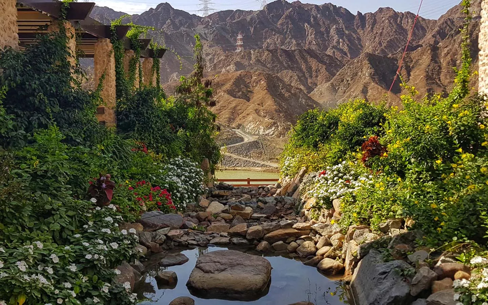

.png)
- Main
- Emirates
- Activities
- Travel Guide
Madhab Spring Sulphuric Park


At a distance of 3 km from Fujairah Fort and 4 km from Fujairah Airport, Ain Al Madhab Spring Park is a park located in the Madhab area of Fujairah city. Situated close to Fujairah Fort & Heritage Village, it is one of the most popular places to visit in Fujairah. Located at the foothills of the Hajar Mountains, just outside Fujairah city, the Al Madhab Park Fujairah is sprawled over 39, 000 square meters of lush green space that is equipped with various play features. The main attraction of the park is the natural mineral spring which produces warm sulphuric water. The source of the mineral spring is on the edge of the park and is fenced. The warm sulphuric water of the spring is pumped into two swimming pools- one for males and another one for females. Although the park is well known for the sulphuric water of the springs, access to them has been closed for now, and visitors are allowed access to the pools only. A bath in the sulphur infested water is said to have relieving properties in case of body aches. The park is home to its very own amphitheater, and if you're lucky enough, you can catch a live performance here! The garden hosts a number of traditional singing or folk dance shows, especially on public holidays. The Ain Al Madhab Garden also offers barbeque facilities and a playground for kids. It's a family-friendly place that gets packed on weekends.